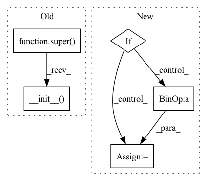

Pattern ID :1187
Before Change
steps (int): The total number of convs in this module, 1 conv 1x1 and (steps - 1) conv3x3.
def __init__(self, in_channels: int, out_channels: int, steps: int, stride: int = 1):
super(STDCBlock, self).__init__()
assert steps in [2, 3, 4], f"only 2, 3, 4 steps number are supported, found: {steps}"
self.stride = stride
After Change
// build skip connection after first convolution.
if stride == 1:
self.skip_step1 = nn.Identity()
elif :
self.skip_step1 = nn.AvgPool2d(kernel_size=3, stride=2, padding=1)
elif stdc_downsample_mode == "dw_conv":
self.skip_step1 = ConvBNReLU(
out_channels // 2, out_channels // 2, kernel_size=3, stride=2, padding=1, bias=False, groups=out_channels // 2, use_activation=False
)
else:
raise ValueError(f"stdc_downsample mode is not supported: found {stdc_downsample_mode}," f" must be in [avg_pool, dw_conv]")In pattern: SUPERPATTERN
Frequency: 3
Non-data size: 5
Instances Fragment ID: 3391779
Project Name: deci-ai/super-gradients
Commit Name: 98083d4303f887cb29f39029871612fe5e2e4753
Time: 2022-11-02
Author: 88616312+lkdci@users.noreply.github.com
File Name: src/super_gradients/training/models/segmentation_models/stdc.py
M Class Name: STDCBlock
N Class Name: STDCBlock
M Method Name: __init__(6)
N Method Name: __init__(5)
M Parent Class: nn.Module
N Parent Class: nn.Module
M File Name: src/super_gradients/training/models/segmentation_models/stdc.py
N File Name: src/super_gradients/training/models/segmentation_models/stdc.py
M Start Line: 34
M End Line: 43
N Start Line: 29
N End Line: 53
Before Change
class ResNet(nn.Module):
def __init__(self, block, depth, output_classes=1000):
assert (depth - 2) % 9 == 0 // 164 or 1001
super(ResNet, self).__init__()
n = (depth - 2) / 9
nstages = [16, 64, 128, 256]
// one conv at the beginning (spatial size: 32x32)
self.conv1 = nn.Conv2d(3, nstages[0], kernel_size=3, stride=1,After Change
self.fc = nn.Linear(64 * block.expansion, num_classes)
for m in self.modules():
if isinstance(m, nn.Conv2d):
n = m.kernel_size[0] * m.kernel_size[1] * m.out_channels
m.weight.data.normal_(0, math.sqrt(2. / n))
elif isinstance(m, nn.BatchNorm2d):
m.weight.data.fill_(1) Fragment ID: 3391777
Project Name: decile-team/cords
Commit Name: 798af04c991257c652c388af7a1fc4964c7f4f6a
Time: 2021-02-08
Author: krishnateja.killamsetty@utdallas.edu
File Name: cords/utils/models/resnet164.py
M Class Name: ResNet
N Class Name: ResNet_Cifar
M Method Name: __init__(4)
N Method Name: __init__(4)
M Parent Class: nn.Module
N Parent Class: nn.Module
M File Name: cords/utils/models/resnet164.py
N File Name: cords/utils/models/resnet164.py
M Start Line: 62
M End Line: 85
N Start Line: 163
N End Line: 182
Before Change
cardinality: num of convolution groups.
widen_factor: factor to reduce the input dimensionality before convolution.
super(ResNeXtBottleneck, self).__init__()
D = cardinality * out_channels // widen_factor
self.conv_reduce = nn.Conv2d(
in_channels, D, kernel_size=1, stride=1, padding=0, bias=False)
self.bn_reduce = nn.BatchNorm2d(D)After Change
self.bn3 = nn.BatchNorm2d(self.expansion*group_width)
self.shortcut = nn.Sequential()
if stride != 1 or in_planes != self.expansion*group_width:
self.shortcut = nn.Sequential(
nn.Conv2d(in_planes, self.expansion* group_width, kernel_size=1, stride=stride, bias=False),
nn.BatchNorm2d(self.expansion*group_width)
)
Fragment ID: 3391766
Project Name: tuttelikz/farabio
Commit Name: 1e781dfbb0f4b2a6cae790f04cab2d6c8a4074bc
Time: 2021-05-10
Author: s.askaruly@gmail.com
File Name: farabio/models/classification/arch/resnext.py
M Class Name: ResNeXtBottleneck
N Class Name: Block
M Method Name: __init__(5)
N Method Name: __init__(6)
M Parent Class: nn.Module
N Parent Class: nn.Module
M File Name: farabio/models/classification/arch/resnext.py
N File Name: farabio/models/classification/arch/resnext.py
M Start Line: 12
M End Line: 40
N Start Line: 14
N End Line: 31